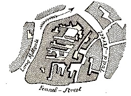

* * * I now proceed to describe Manchester’s worker districts. First of all, there is the Old Town, which lies between the northern boundary of the commercial district and the Irk. Here the streets, even the better ones, are narrow and winding, as Todd Street, Long Millgate, Withy Grove, and Shude Hill, the houses dirty, old, and tumble-down, and the construction of the side streets utterly horrible. Going from the Old Church to Long Millgate, the stroller has at once a row of old-fashioned houses at the right, of which not one has kept its original level; these are remnants of the old pre-manufacturing Manchester, whose former inhabitants have removed with their descendants into better-built districts, and have left the houses, which were not good enough for them, to a working-class population strongly mixed with Irish blood. Here one is in an almost undisguised working-men’s quarter, for even the shops and beerhouses hardly take the trouble to exhibit a trifling degree of cleanliness. But all this is nothing in comparison with the courts and lanes which lie behind, to which access can be gained only through covered passages, in which no two human beings can pass at the same time. Of the irregular cramming together of dwellings in ways which defy all rational plan, of the tangle in which they are crowded literally one upon the other, it is impossible to convey an idea. And it is not the buildings surviving from the old times of Manchester which are to blame for this; the confusion has only recently reached its height when every scrap of space left by the old way of building has been filled up and patched over until not a foot of land is left to be further occupied.
To confirm my statement I have drawn here a small section of the plan of Manchester—not the worst spot and not one-tenth of the whole Old Town.
This drawing will suffice to characterise the irrational manner in which the entire district was built, particularly the part near the Irk.

The south bank of the Irk is here very steep and between fifteen and thirty feet high. On this declivitous hillside there are planted three rows of houses, of which the lowest rise directly out of the river, while the front walls of the highest stand on the crest of the hill in Long Millgate. Among them are mills on the river, in short, the method of construction is as crowded and disorderly here as in the lower part of Long Millgate. Right and left a multitude of covered passages lead from the main street into numerous courts, and he who turns in thither gets into a filth and disgusting grime, the equal of which is not be found—especially in the courts which lead down to the Irk, and which contain unqualifiedly the most horrible dwellings which I have yet beheld. In one of these courts there stands directly at the entrance, at the end of the covered passage, a privy without a door, so dirty that the inhabitants can pass into and out of the court only by passing through foul pools of stagnant urine and excrement. This is the first court on the Irk above Ducie Bridge—in case any one should care to look into it. Below it on the river there are several tanneries which fill the whole neighborhood with the stench of animal putrefaction. Below Ducie Bridge the only entrance to most of the houses is by means of narrow, dirty stairs and over heaps of refuse and filth. The first court below Ducie Bridge, known as Allen’s Court, was in such a state at the time of the cholera that the sanitary police ordered it evacuated, swept and disinfected with chloride of lime. Dr. Kay gives a terrible description of the state of this court at that time.355 Since then, it seems to have been partially torn away and rebuilt; at least looking down from Ducie Bridge, the passer-by sees several ruined walls and heaps of débris with some newer houses. The view from this bridge, mercifully concealed from mortals of small stature by a parapet as high as a man, is characteristic for the whole district. At the bottom flows, or rather stagnates, the Irk, a narrow, coal-black, foul-smelling stream, full of débris and refuse, which it deposits on the shallower right bank. In dry weather, a long string of the most disgusting blackish-green slime pools are left standing on this bank, from the depths of which bubbles of miasmatic gas constantly arise and give forth a stench unendurable even on the bridge forty or fifty feet above the surface of the stream. But besides this the stream itself is checked every few paces by high weirs, behind which slime and refuse accumulate and rot in thick masses. Above the bridge are tanneries, bonemills, and gasworks, from which all drains and refuse find their way into the Irk, which receives further the contents of all the neighbouring sewers and privies. It may be easily imagined, therefore, what sort of residue the stream deposits. Below the bridge you look upon the piles of débris, the refuse, filth, and offal from the courts on the steep left bank; here each house is packed close behind its neighbour and a piece of each is visible, all black, smoky, crumbling, ancient, with broken panes and window-frames. The background is furnished by old barrack-like factory buildings. On the lower right bank stands a long row of houses and mills; the second house being a ruin without a roof, piled with débris; the third stands so low that the lowest floor is uninhabitable, and therefore without windows or doors. Here the background embraces the pauper burial-ground, the station of the Liverpool and Leeds railway, and, in the rear of this, the Workhouse, the “Poor-Law Bastille” of Manchester, which, like a citadel, looks threateningly down from behind its high walls and parapets on the hilltop, upon the working-people’s quarter below.
Above Ducie Bridge, the left bank grows more flat and the right bank steeper, but the condition of the dwellings on both banks grows worse rather than better. He who turns to the left here from the main street, Long Millgate, is lost; he wanders from one court to another, turns countless corners, passes nothing but narrow, filthy nooks and alleys, until after a few minutes he has lost all clue, and knows not whither to turn. Everywhere half or wholly ruined buildings, some of them actually uninhabited, which means a great deal here; rarely a wooden or stone floor to be seen in the houses, almost uniformly broken, ill-fitting windows and doors, and a state of filth! Everywhere heaps of débris, refuse, and offal; standing pools for gutters, and a stench which alone would make it impossible for a human being in any degree civilised to live in such a district. The newly-built extension of the Leeds railway, which crosses the Irk here, has swept away some of these courts and lanes, laying others completely open to view. Immediately under the railway bridge there stands a court, the filth and horrors of which surpass all the others by far, just because it was hitherto so shut off, so secluded that the way to it could not be found without a good deal of trouble. I should never have discovered it myself, without the breaks made by the railway, though I thought I knew this whole region thoroughly. Passing along a rough bank, among stakes and washing-lines, one penetrates into this chaos of small one-storied, one roomed huts, in most of which there is no artificial floor; kitchen, living and sleeping-room all in one. In such a hole, scarcely five feet long by six broad, I found two beds—and such bedsteads and beds!—which, with a staircase and chimney-place, exactly filled the room. In several others I found absolutely nothing, while the door stood open, and the inhabitants leaned against it. Everywhere before the doors refuse and offal; that any sort of pavement lay underneath could not be seen but only felt, here and there, with the feet. This whole collection of cattle-sheds for human beings was surrounded on two sides by houses and a factory, and on the third by the river, and besides the narrow stair up the bank, a narrow doorway alone led out into another almost equally ill-built, ill-kept labyrinth of dwellings.
Enough! The whole side of the Irk is built in this way, a planless, knotted chaos of houses, more or less on the verge of uninhabitableness, whose unclean interiors fully correspond with their filthy external surroundings And how could the people be clean with no proper opportunity for satisfying the most natural and ordinary wants? Privies are so rare here that they are either filled up every day, or are too remote for most of the inhabitants to use. How can people wash when they have only the dirty Irk water at hand, while pumps and water pipes can be found in decent parts of the city alone? In truth, it cannot be charged to the account of these helots of modern society if their dwellings are not more clean than the pig sties which are here and there to be seen among them. The landlords are not ashamed to let dwellings like the six or seven cellars on the quay directly below Scotland Bridge, the floors of which stand at least two feet below the low-water level of the Irk that flows not six feet away from them; or like the upper floor of the corner-house on the opposite shore directly above the bridge, where the ground-floor, utterly uninhabitable, stands deprived of all fittings for doors and windows, a case by no means rare in this region, when this open ground-floor is used as a privy by the whole neighbourhood for want of other facilities!
If we leave the Irk and penetrate once more on the opposite side from Long Millgate into the midst of the working-men’s dwellings, we shall come into a somewhat newer quarter, which stretches from St. Michael’s Church to Withy Grove and Shude Hill. Here there is somewhat better order. In place of the chaos of buildings, we find at least long straight lanes and alleys or courts, built according to a plan and usually square. But if, in the former case, every house was built according to caprice, here each lane and court is so built, without reference to the situation of the adjoining ones. The lanes run now in this direction, now in that, while every two minutes the wanderer gets into a blind alley, or on turning a corner, finds himself back where he started from; certainly no one who has not lived a considerable time in this labyrinth can find his way through it.
If I may use the word at all in speaking of this district, the ventilation of these streets and courts is, in consequence of this confusion, quite as imperfect as in the Irk region; and if this quarter may, nevertheless, be said to have some advantage over that of the Irk, the houses being newer and the streets occasionally having gutters, nearly every house has, on the other hand, a cellar dwelling, which is rarely found in the Irk district, by reason of the greater age and more careless construction of the houses. As for the rest, the filth, débris, and offal heaps, and the pools in the streets are common to both quarters, and in the district now under discussion, another feature most injurious to the cleanliness of the inhabitants, is the multitude of pigs walking about in all the alleys, rooting into the offal heaps, or kept imprisoned in small pens. Here, as in most of the working-men’s quarters of Manchester, the pork-raisers rent the courts and build pig-pens in them. In almost every court one or even several such pens may be found, into which the inhabitants of the court throw all refuse and offal, whence the swine grow fat; and the atmosphere, confined on all four sides, is utterly corrupted by putrefying animal and vegetable substances. Through this quarter, a broad and measurably decent street has been cut, Millers Street, and the background has been pretty successfully concealed. But if any one should be led by curiosity to pass through one of the numerous passages which lead into the courts, he will find this piggery repeated at every twenty paces.
Such is the Old Town of Manchester, and on re-reading my description, I am forced to admit that instead of being exaggerated, it is far from black enough to convey a true impression of the filth, ruin, and uninhabitableness, the defiance of all considerations of cleanliness, ventilation, and health which characterize the construction of this single district, containing at least twenty to thirty thousand inhabitants. And such a district exists in the heart of the second city of England, the first manufacturing city of the world. If any one wishes to see in how little space a human being can move, how little air—and such air!—he can breathe, how little of civilisation he may share and yet live, it is only necessary to travel hither. True, this is the Old Town, and the people of Manchester emphasise the fact whenever any one mentions to them the frightful condition of this Hell upon Earth; but what does that prove? Everything which here arouses horror and indignation is of recent origin, belongs to the industrial epoch. The couple of hundred houses, which belong to old Manchester, have been long since abandoned by their original inhabitants; the industrial epoch alone has crammed into them the swarms of workers whom they now shelter; the industrial epoch alone has built up every spot between these old houses to win a covering for the masses whom it has conjured hither from the agricultural districts and from Ireland; the industrial epoch alone enables the owners of these cattlesheds to rent them for high prices to human beings, to plunder the poverty of the workers, to undermine the health of thousands, in order that they alone, the owners, may grow rich. In the industrial epoch alone has it become possible that the worker scarcely freed from feudal servitude could be used as mere material, a mere chattel; that he must let himself be crowded into a dwelling too bad for every other, which he for his hard-earned wages buys the right to let go utterly to ruin. This manufacture has achieved, which, without these workers, this poverty, this slavery could not have lived. True, the original construction of this quarter was bad, little good could have been made out of it; but, have the landowners, has the municipality done anything to improve it when rebuilding? On the contrary, wherever a nook or corner was free, a house has been run up; where a superfluous passage remained, it has been built up; the value of land rose with the blossoming out of manufacture, and the more it rose, the more madly was the work of building up carried on, without reference to the health or comfort of the inhabitants, with sole reference to the highest possible profit on the principle that no hole is so bad but that some poor creature must take it who can pay for nothing better. However, it is the Old Town, and with this reflection the bourgeoisie is comforted. Let us see, therefore, how much better it is in the New Town.
The New Town, known also as Irish Town, stretches up a hill of clay, beyond the Old Town, between the Irk and St. George’s Road. Here all the features of a city are lost. Single rows of houses or groups of streets stand, here and there, like little villages on the naked, not even grassgrown clay soil; the houses, or rather cottages, are in bad order, never repaired, filthy, with damp, unclean, cellar dwellings; the lanes are neither paved nor supplied with sewers, but harbour numerous colonies of swine penned in small sties or yards, or wandering unrestrained through the neighbourhood. The mud in the streets is so deep that there is never a chance, except in the dryest weather, of walking without sinking into it ankle deep at every step. In the vicinity of St. George’s Road, the separate groups of buildings approach each other more closely, ending in a continuation of lines, blind alleys, back lanes and courts, which grow more and more crowded and irregular the nearer they approach the heart of the town. True, they are here oftener paved or supplied with paved sidewalks and gutters; but the filth, the bad odor of the houses, and especially of the cellars, remain the same. * * *